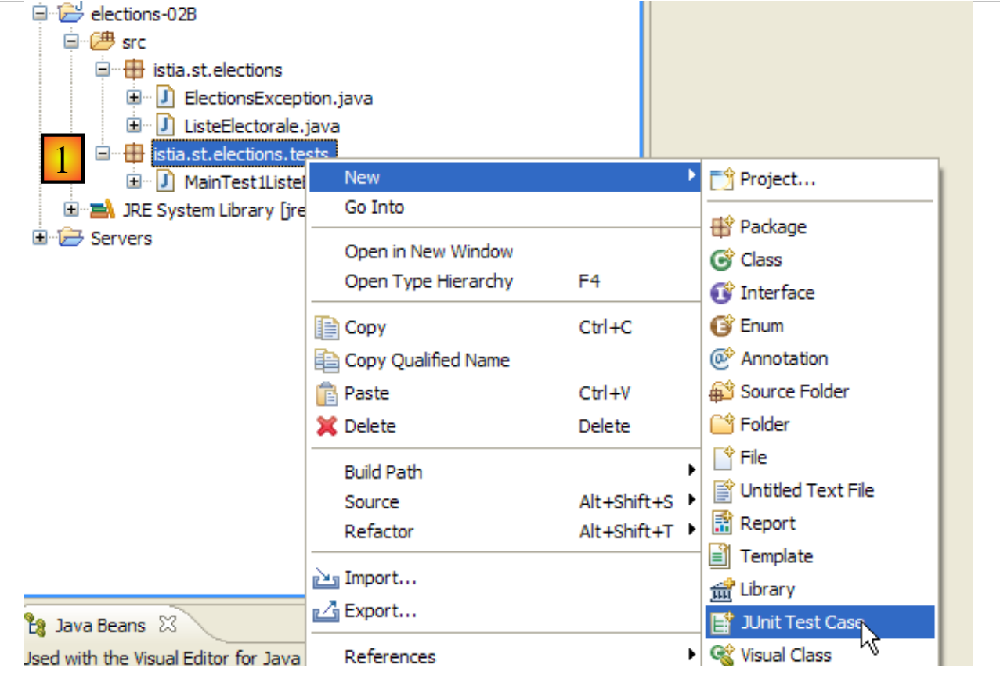
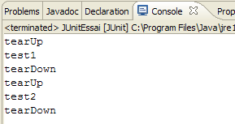

3. [TD]: 类
关键词：类、接口、继承、异常、多态
推荐阅读：
- [ref1] 第 2 章的 2.1、2.2、2.4 和 2.7 节：类与接口
- 第3.3节（String类）、第3.5节（ArrayList类）、第3.6节（Arrays类）
在 ELECTIONS 练习的第一部分中，我们没有使用任何类。我们构建的解决方案与在 C 语言中构建的方式相同。现在我们将介绍 Java 类的概念。
3.1. 支持
 |  |
文件夹 [support / chap-03] 包含本章的 Eclipse 项目。
接下来我们将使用 JDK 1.8，因为后续的一些项目需要此版本的 JDK。要确定当前使用的 JDK 版本，请按以下步骤操作：
 |
 |
- 在 [4] 中，所使用的 JRE（Java 运行时环境）。此处的 JRE 实际上是 JDK（Java 开发工具包），具体为 [jdk1.8.0_60]。如果它不是 JDK，或者您的版本低于 1.8，请按以下步骤操作 [5-21]；
 |
- 在 [8] 中，Eclipse 当前默认使用的 JRE；
- 在 [11] 中，Eclipse 当前识别的各种 JDK 和 JRE；
 |
- 在 [15] 中，请选择 JDK 而不是 JRE。本文档使用的 Maven 项目需要 JDK；
 |
 |
- 在 [21] 中，我们使用的 JDK 版本 >=1.8；
- 在 [22-23] 中，访问项目的切面（同一 Eclipse 项目的不同视图）；
 |
- 在 [24] 中，请确认您使用的 Java 版本 >=1.8；
3.2. 类 [ ListeElectorale]
在 C 语言中，我们可能会使用结构体来表示候选人名单。它可能看起来像这样：
Java 语言中不存在结构体（structure）的概念。它必须由类（class）的概念来替代。因此，我们决定创建一个类来存储候选人列表的相关信息。该类的骨架如下：
package istia.st.elections;
public class ListeElectorale {
/**
* identité de la liste
*/
private int id;
/**
* nom de la liste
*/
private String nom;
/**
* nombre de voix de la liste
*/
private int voix;
/**
* nombre de sièges de la liste
*/
private int sieges;
/**
* indique si la liste est éliminée ou non
*/
private boolean elimine;
/**
* constructeur par défaut
*/
public ListeElectorale() {
}
/**
*
* @param nom String : le nom de la liste
* @param voix int : son nombre de voix
* @param sieges int : son nombre de sieges
* @param elimine boolean : son état éliminé ou non
*/
public ListeElectorale(int id,String nom, int voix, int sieges, boolean elimine) {
...
}
/**
*
* @return int : l'identifiant de la liste
*/
public int getId() {
...
}
/**
* initialise l'identifiant de liste
* @param id int : identifiant de la liste
* @throws ElectionsException si id<1
*/
public void setId(int id) {
...
}
/**
*
* @return String : le nom de la liste
*/
public String getNom() {
...
}
/**
* initialise le nom de la liste
* @param nom String : nom de la liste
* @throws ElectionsException si le nom est vide ou blanc
*/
public void setNom(String nom) {
...
}
/**
*
* @return int : le nombre de voix de la liste
*/
public int getVoix() {
...
}
/**
* initialise le nombre de voix de la liste
* @param voix int : le nombre de voix de la liste
*/
public void setVoix(int voix) {
...
}
/**
*
* @return int : le nombre de sièges de la liste
*/
public int getSieges() {
...
}
/**
* fixe le nombre de sièges de la liste
* @param sieges int : le nombre de sièges de la liste
*/
public void setSieges(int sieges) {
...
}
/**
*
* @return boolean : valeur du champ elimine
*/
public boolean isElimine() {
...
}
/**
*
* @param sieges int
*/
public void setElimine(boolean elimine) {
...
}
/**
*
* @return String : identité de la liste électorale
*/
public String toString() {
...
}
}
- 第 8 行：列表的唯一标识符。此处并非必需，但预留供将来使用。
- 第 13 行：列表的名称。
- 第17行：该名单的得票数
- 第21行：该名单的席位数
- 第25行：一个布尔值，用于指示该名单是否因得票率低于选举门槛而被淘汰。
每个名为 [xyz] 的私有字段均可通过名为 [setXyz] 的方法进行初始化。[getXyz] 方法用于获取私有字段 [xyz] 的值。在 [xyz] 为布尔型字段的特定情况下，[getXyz] 方法可替换为 [isXyz] 方法。 这些方法的命名遵循名为 JavaBean 标准的编码规范。因此，我们定义以下公共方法：
- getId（第 48 行）、setId（第 57 行）
- getName（第 65 行）、setName（第 74 行）
- getVoice（第 82 行），setVoice（第 90 行）
- getSeats（第 98 行），setSeats（第 106 行）
- isEliminated（第 114 行），setEliminated（第 122 行）
- 第 30-31 行：定义一个无参构造函数。这允许您在不初始化 [VoterList] 对象的情况下创建它。随后可通过 set 方法对其进行初始化。
- 第 40–42 行：定义一个构造函数，该构造函数在创建 [VoterList] 对象的同时初始化其五个私有字段。
- 第 130–132 行：定义 [toString] 方法，该方法返回一个字符串，其中包含对象五个字段的值。
[VoterList] 类的测试程序可能如下所示：
package istia.st.elections.tests;
import istia.st.elections.ListeElectorale;
public class MainTest1ListeElectorale {
public static void main(String[] args) {
// creation of an electoral list
ListeElectorale listeElectorale1 = new ListeElectorale(1, "A", 32000,
0, false);
// display identity list
System.out.println("listeElectorale1=" + listeElectorale1);
// change in number of seats
listeElectorale1.setSieges(2);
// display identity list 1
System.out.println("listeElectorale1=" + listeElectorale1);
// a new electoral roll
ListeElectorale listeElectorale2 = listeElectorale1;
// display identity list 2
System.out.println("listeElectorale2=" + listeElectorale2);
// change in number of seats
listeElectorale2.setSieges(3);
// display identity of the 2 lists
System.out.println("listeElectorale2=" + listeElectorale2);
System.out.println("listeElectorale1=" + listeElectorale1);
}
}
此测试的 Eclipse 环境可能如下所示：
 |
- [1]：项目名为 [elections-02A]
- [2]：应用程序将放置在一个包中，此处为 [istia.st.elections]
- [3]: [VoterList.java] 是 [VoterList] 类的源代码
- [4]: 测试类将放置在一个包中，此处为 [istia.st.elections.tests]
- [5]: 测试类 [MainTest1VoterList]
运行上述程序后获得的屏幕显示如下：

任务：根据上述信息，完成 VoterList 类的代码。
3.3. 创建异常类 [ElectionsException]
在 Java 语言的各种异常类中，有一个名为 [RuntimeException] 的类。该类继承自 [Exception] 类，即所有异常类的根类。[RuntimeException] 实例或其派生实例的显著特征在于，您无需对其进行声明或处理。它们被称为未捕获异常。
让我们来看一个简单的示例。[BufferedReader] 类是一个允许你从数据流中读取文本行的类。它有一个 [readLine] 方法，其签名如下：
我们可以看到，该方法可能会抛出 [IOException]。该类的类层次结构如下：
[IOException] 类继承自 [Exception] 类（第 3 行）。编译器要求我们处理并声明 [java.lang.Exception] 类型或其派生类型的异常（[RuntimeException] 分支除外，我们稍后将讨论）。因此，要读取键盘输入的一行文本，我们必须编写类似以下代码：
再来看一个例子。要将字符串转换为整数，我们可以使用静态方法 [Integer.parseInt]，其签名如下：
参数 [s] 是要转换为整数的字符串。我们可以看到，该方法可能会抛出 [NumberFormatException]。该类的类层次结构如下：
[NumberFormatException] 类继承自 [RuntimeException] 类（第 4 行）。编译器并不要求我们处理或声明 [java.lang.RuntimeException] 类型及其子类的异常。因此，我们可以编写如下代码：
我们无需添加 [try-catch] 代码块来处理 [Integer.parseInt] 方法（第 9 行）可能抛出的任何异常。
创建和使用从 [RuntimeException] 派生的异常类各有优缺点：
- 优点在于：代码更加简洁
- 缺点是：我们可能会最终 resort to C 风格的方法，即每个函数返回一个错误代码——这种做法很少有人使用，正是为了保持代码的轻量级。当发生此类未处理的错误时，程序会崩溃，通常以一种不优雅的方式。
我们决定创建一个特殊类，将 ELECTIONS 应用程序中可能发生的所有异常归类到其中。该类将命名为 [ElectionsException]，并继承自 [RuntimeException] 类。其代码如下：
package istia.st.elections;
public class ElectionsException extends RuntimeException {
private static final long serialVersionUID = 1L;
public ElectionsException() {
super();
}
public ElectionsException(String message) {
super(message);
}
public ElectionsException(Throwable cause) {
super(cause);
}
public ElectionsException(String message, Throwable cause) {
super(message, cause);
}
}
- 第 1 行：我们将该类放置在 [istia.st.elections] 包中；
- 第 3 行：该类继承自 [RuntimeException]。因此它属于未检查异常；
- 第 4 行：一个序列化标识符，目前我们可以忽略它；
- 在我们的应用程序中，我们将使用两种类型的构造函数：
- 第 15–17 行中的经典构造函数，如下所示：
在这种情况下，调用会抛出此类异常的方法可以按以下方式进行处理：
// test exception
try {
listeElectorale2.setSieges(-3);
} catch (ElectionsException ex) {
System.err.println("L'exception suivante s'est produite : ["
+ ex.toString() + "]");
}
- （待续）
- 或者第 14–20 行中的代码，其设计目的是通过将已发生的异常包装在 [ElectionsException] 中来传播该异常：
try {
...;
} catch (SQLException ex) {
// on encapsule l'exception
throw new ElectionsException("erreur de fermeture de la connexion à la BD",ex);
}
这种第二种方法的优势在于保留了第一个异常中包含的信息。在这种情况下，调用抛出此类异常的方法可以按以下方式进行处理：
try {
...;
} catch (ElectionsException ex) {
System.out.println(ex.getMessage() + ", Cause : "+ ex.getCause().getMessage());
System.exit(1);
}
任务：修改 ListeElectorale 类的代码，使得当请求的初始化操作不正确时（例如将 name 初始化为空字符串），set 方法会抛出 [ElectionsException] 异常。
此新版本的 Eclipse 测试项目可以如下所示：
 |
- [1]：项目命名为 [elections-02B]
- [2]：应用程序位于一个包中，此处为 [istia.st.elections]
- [3]: 类 [VoterList] 和 [ElectionsException]
- [4]: 测试类位于一个包中，此处为 [istia.st.elections.tests]
- [5]: 测试类 [MainTest1VoterList]
前面提到的测试类 [MainTest1VoterList] 已稍作修改，用于测试异常情况：
package istia.st.elections.tests;
import istia.st.elections.ElectionsException;
import istia.st.elections.ListeElectorale;
public class MainTest1ListeElectorale {
public static void main(String[] args) {
// creation of an electoral list
ListeElectorale listeElectorale1 = new ListeElectorale(1, "A", 32000,
0, false);
// display identity list
System.out.println("listeElectorale1=" + listeElectorale1);
// change in number of seats
listeElectorale1.setSieges(2);
// display identity list 1
System.out.println("listeElectorale1=" + listeElectorale1);
// a new electoral roll
ListeElectorale listeElectorale2 = listeElectorale1;
// display identity list 2
System.out.println("listeElectorale2=" + listeElectorale2);
// change in number of seats
listeElectorale2.setSieges(3);
// display identity of the 2 lists
System.out.println("listeElectorale2=" + listeElectorale2);
System.out.println("listeElectorale1=" + listeElectorale1);
// test exception
try {
listeElectorale2.setSieges(-3);
} catch (ElectionsException ex) {
System.err.println("L'exception suivante s'est produite : ["
+ ex.toString() + "]");
}
}
}
- 第 28 行：我们尝试用一个无效的值初始化座位数
- 第 30 行：如果发生异常，则显示该异常
运行测试后得到以下结果：

请注意，当我们尝试使用无效值初始化席位数时（代码第 28 行），[VoterList] 类确实抛出了异常。
3.4. 单元测试类
前一种测试依赖于视觉验证。我们检查屏幕上显示的内容是否与预期一致。这种方法在专业环境中并不推荐。测试应尽可能实现自动化，并力求无需人工干预。毕竟，人容易疲劳，且其验证测试的能力会随着一天的推移而逐渐下降。
应用程序会随着时间推移而演进。每次更新后，我们都必须验证应用程序是否“回归”，即它是否仍能通过初始开发阶段执行的功能测试。这些测试被称为“非回归”测试。 中等规模的应用程序可能需要数百个测试。实际上，应用程序中每个类的每个方法都会被测试。这些被称为单元测试。如果未实现自动化，它们将占用大量开发人员的时间。
为此，人们开发了各种测试自动化工具。其中一种名为 [JUnit]。这是一个专为管理测试而设计的类库。我们将使用该工具来测试 [VoterList] 类。
一个 JUnit 测试程序（4.x 版本）具有以下形式：
package istia.st.elections.tests;
import org.junit.Assert;
import org.junit.After;
import org.junit.Before;
import org.junit.Test;
public class JUnitEssai {
@Before
public void avant() throws Exception {
System.out.println("tearUp");
}
@After
public void après() throws Exception {
System.out.println("tearDown");
}
@Test
public void t1() {
System.out.println("test1");
Assert.assertEquals(1, 1);
}
@Test
public void t2() {
System.out.println("test2");
Assert.assertEquals(1, 2);
}
}
- 第 1 行：该类已放置在 [istia.st.elections.tests] 包中；
- 第 11 行：标注了 [@Before] 注解的方法将在每次单元测试之前执行；
- 第 16 行：标注了 [@After] 注解的方法将在每次单元测试之后执行；
- 第 21 行：带有 [@Test] 注解的方法是单元测试所测试的方法。带有 [@Test] 注解的方法将依次执行，除非测试人员另有指定，测试人员可以自行选择要测试的方法。 每次执行 [@Test] 方法之前，都会先执行 [@Before] 方法；每次执行 [@Test] 方法之后，都会执行 [@After] 方法；
- 第 22–25 行：定义一个 [t1] 测试方法；
- 第 18 行：用于检查断言的 [Assert.assert*] 方法之一。可用的 [assert] 方法包括：
- assertEquals(expression1, expression2)：检查两个表达式的值是否相等。支持多种类型的表达式（int、String、float、double、boolean、char、short）。如果两个表达式不相同，则抛出 [AssertionFailedError] 异常，
- assertEquals(real1, real2, delta)：检查两个实数是否在误差 delta 范围内相等，即 abs(real1-real2) <= delta。例如，可以编写 assertEquals(real1, real2, 1E-6) 来验证两个值在 10⁻⁶ 误差范围内相等，
- assertEquals(message, expression1, expression2) 和 assertEquals(message, real1, real2, delta) 是允许您指定错误消息的变体，该消息将与 [assertEquals] 方法失败时抛出的 [AssertionFailedError] 异常相关联，
- assertNotNull(Object) 和 assertNotNull(message, Object)：检查 Object 是否不为 null，
- assertNull(Object) 和 assertNull(message, Object)：检查 Object 是否等于 null，
- assertSame(Object1, Object2) 和 assertSame(message, Object1, Object2)：检查引用 Object1 和 Object2 是否指向同一个对象，
- assertNotSame(Object1, Object2) 和 assertNotSame(message, Object1, Object2)：检查引用 Object1 和 Object2 是否不指向同一个对象；
- 第 24 行：此断言必须通过；
- 第 30 行：此断言必须失败；
在 Eclipse 环境中，可以按以下方式创建一个 JUnit 测试类：
 |
- [1]：右键单击要添加测试类的包，然后选择 [JUnit / New / JUnit Test Case]
 |
- [1]：选择 JUnit 版本；
- [2]: 选择应创建测试类的文件夹；
- [3]: 选择测试类应创建的包；
- [4]: 输入测试类的名称；
- [5]: 选择要包含在生成的类中的方法；
- [6]: 已生成 JUnitEssai 类
上述向导生成的类几乎为空：
package istia.st.elections.tests;
import org.junit.Assert;
import org.junit.After;
import org.junit.Before;
public class JUnitEssai {
@Before
public void setUp() throws Exception {
}
@After
public void tearDown() throws Exception {
}
}
让我们按以下方式完成并修改之前的代码：
package istia.st.elections.tests;
import org.junit.Assert;
import org.junit.After;
import org.junit.Before;
import org.junit.Test;
public class JUnitEssai2 {
@Before
public void avant() throws Exception {
System.out.println("tearUp");
}
@After
public void après() throws Exception {
System.out.println("tearDown");
}
@Test
public void t1() {
System.out.println("test1");
Assert.assertEquals(1, 1);
}
@Test
public void t2() {
System.out.println("test2");
Assert.assertEquals(1, 2);
}
}
在 Eclipse 中，右键单击测试类，然后选择 [运行为 / JUnit 测试] 来运行它：

运行此测试后获得的结果如下：

上文中的 [test2] 方法测试失败。每次测试失败时，都会显示相应的错误信息。对于 [test2] 方法，错误信息如上所示。该信息指明了发生错误的行号（第 30 行）。在第 30 行，失败的调用是：
Assert.assertEquals(1, 2);
第一个参数称为预期值，第二个参数称为实际值。上文 [test2] 的错误信息表明，预期值为 2，但实际值为 3。
最后，各个测试方法写入控制台的消息如下：

这些消息表明，[@Before] 和 [@After] 方法确实分别在每个测试方法执行前和执行后被调用。
测试类并不一定由开发人员亲自编写。它们可能由编写应用程序规格说明的人员编写。一些被称为 TDD（测试驱动开发）的开发方法主张，甚至在编写待测类之前就先编写测试类。这有时有助于澄清那些否则可能会被多义解释的规格说明。
让我们为 [VoterList] 类创建一个名为 [JUnitTest1VoterList] 的 JUnit 4 测试。在 Eclipse 中，我们将按照之前所述的步骤进行：
 |  |
我们将向向导生成的代码补充如下：
package istia.st.elections.tests;
import org.junit.Assert;
import istia.st.elections.ElectionsException;
import istia.st.elections.ListeElectorale;
import org.junit.Test;
public class JUnitTest1ListeElectorale {
@Test
public void t1() {
// electoral list creation
ListeElectorale liste = new ListeElectorale(1, "a", 32000, 0, false);
// checks
Assert.assertEquals("a", liste.getNom());
Assert.assertEquals(32000, liste.getVoix());
Assert.assertEquals(false, liste.isElimine());
Assert.assertEquals(0, liste.getSieges());
// validity check id
boolean erreur = false;
try {
liste.setId(-4);
} catch (ElectionsException e) {
erreur = true;
}
Assert.assertEquals(true, erreur);
// name validity check
erreur = false;
try {
liste.setNom("");
} catch (ElectionsException e) {
erreur = true;
}
Assert.assertEquals(true, erreur);
// voice validity check
erreur = false;
try {
liste.setVoix(-4);
} catch (ElectionsException e) {
erreur = true;
}
Assert.assertEquals(true, erreur);
// seat validity check
erreur = false;
try {
liste.setSieges(-4);
} catch (ElectionsException e) {
erreur = true;
}
Assert.assertEquals(true, erreur);
}
}
运行测试后得到以下结果：

测试通过。现在我们将 [VoterList] 类视为已可正常运行。
3.5. MainElections：第 2 版
推荐阅读：
- [1] 第 2 章的 2.1、2.2、2.4 和 2.7 节：类与接口
- 第 3.3 节（String 类）、第 3.5 节（ArrayList 类）、第 3.6 节（Arrays 类）
我们希望通过添加以下新约束来重写 [Elections] 应用程序：
- 我们将使用 [VoterList] 类来表示候选人列表
- 该应用程序将提示用户输入以下信息：
- 待填补的席位数
- 各候选名单的名称及得票数。我们无法预先得知名单数量。最后一个名单将以字符串“*”作为名称。
- 由于无法预先得知名单数量，这些名单将首先存储在一个 [ArrayList] 对象中。待所有名单输入完毕后，将转存至一个列表数组中。
- 结果将按获得席位数从高到低的顺序显示。
要对数组 T 进行排序，我们可以使用 [Arrays] 类的各种静态方法：
- Arrays.sort(T)：若数组 T 具有自然排序顺序（如数字升序、日期升序、字符串按字母顺序等），则按该顺序对其进行排序
- Arrays.sort(T,comparator)：用于对没有自然排序顺序的数组 T 进行排序。此处的情况正是如此，该列表数组必须根据列表的特定字段（即获得的席位数）进行排序。
在 Arrays.sort(T,comparator) 方法中，comparator 参数是一个实现了以下 Comparator 接口的对象：

- compare 方法用于比较数组 T 中的两个元素
- equals 方法用于判断两个对象是否相等
这两个方法都比较 Object 类型的 obj1 和 obj2。判断 obj1<obj2、obj1=obj2 还是 obj1>obj2，取决于我们希望在两个对象之间建立的排序关系。具体如何确定：
- obj1 小于 obj2
- obj1 大于 obj2
- obj1 等于 obj2
所有 Java 类都继承自 Object 类，该类本身已包含一个 [equals] 方法。若要对类型为 O 的对象数组 T 进行排序，O 类的 [equals] 方法则无用武之地。 因此，我们可以保留 Object 类提供的默认实现。此时只需实现 [compare] 方法即可。该方法会被 [Arrays.sort] 方法反复调用。每次调用时，[Arrays.sort] 都会将 obj1 和 obj2（待排序数组 T 中的两个元素）作为参数传递给 compare 方法。在本例中，这些元素的类型为 [VoterList]。 请注意此处的多态性机制。[compare] 方法被定义为接受 [Object] 类型的参数。这意味着它可以接受 [Object] 类型或任何派生类型的参数（即多态性）。由于 [Object] 是所有 Java 类的父类，因此实际参数可以是 [VoterList] 类型。
若要按升序排序，[compare] 方法必须返回：
- 如果 obj1 小于 obj2，则为 -1
- 如果 obj1 大于 obj2，则 +1
- 如果 obj1 等于 obj2，则为 0
若按降序排序，则 +1 和 -1 的取值需互换。术语“小于”、“大于”和“等于”表示一种序关系。对于 [VoterList] 类型的对象，若 list1 的票数少于 list2，则成立 list1 “小于” list2 的关系。
在与 [MainElections] 类位于同一源文件中，我们可以添加第二个类：
- 第 2 行：该类未声明为 public。在 Java 源文件中，可以包含多个类，但只有一个类可以具有 public 属性——即与源文件同名的类。
在之前的 compare 方法中，参数的类型为 Object，这要求第 7 行和第 8 行将方法参数从 Object 类型强制转换为 VoterList 类型。compare 方法的签名由 Comparator 接口规定，该接口旨在比较任意对象。自 JDK 1.5 起，引入了泛型 Comparator 接口：Comparator<T>，其中 T 代表任何 Java 类型。 Comparator<T> 接口的 compare 方法比较的是 T 类型的对象，而非 Object 类型的对象，从而避免了之前的类型转换。用于 VoterList 类型对象的比较类可能如下所示：
// classe de comparaison de listes électorales
class CompareListesElectorales implements Comparator<ListeElectorale> {
// comparaison de deux listes électorales selon le nombre de sièges
public int compare(ListeElectorale listeElectorale1,
ListeElectorale listeElectorale2) {
...
}
}
- 第 2 行：该类实现了 Comparator<VoterList> 接口
- 第 5-6 行：compare 方法的参数类型为 VoterList。不再需要类型转换。
JDK 1.5 为 JDK 1.4 中原本仅处理 Object 类型对象的各类类和接口引入了泛型类/接口的概念。列表、字典等便是如此。
我们之前提到过，由于不知道列表的数量，因此无法将它们存储在数组中。它们可以存储在 ArrayList 对象中，该对象实现了“对象列表”的概念。 该类用于存储 Object 类型的对象。自 JDK 1.5 起，已支持类型化的对象列表。因此，在将列表转移到数组之前，我们将使用一个 ArrayList<VoterList> 对象来存储这些列表。如果该数组命名为 tLists，则可通过以下语句对其进行排序：
// tri des listes
Arrays.sort(tListes, new CompareListesElectorales());
其中 CompareVoterLists 是实现 Comparator<VoterList> 接口的类。
任务：根据这些新规范重写 [Elections] 应用程序。
Eclipse 项目可能如下所示：
 |
[1] 的执行示例如下：